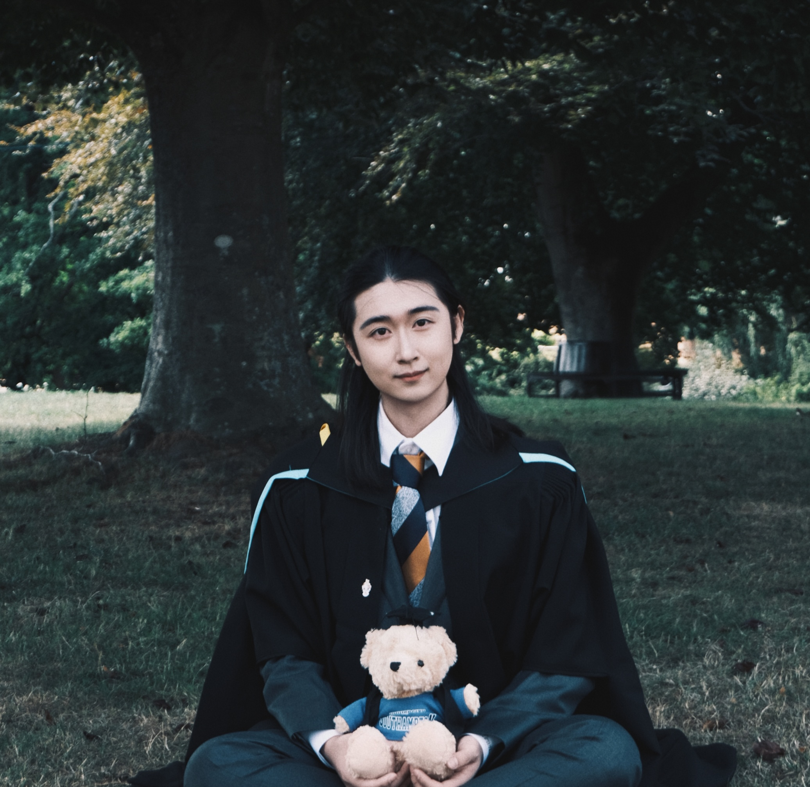

Boyang Yu
Medical AI · Digital Pathology · Human-in-the-Loop (HITL) · Multimodal Learning

About
I work on Medical AI with a focus on digital pathology. My current interests include high-recall learning, human-in-the-loop (HITL) systems for efficient expert interaction, and multimodal methods that combine image evidence with complementary signals.
I also explore general deep learning topics that transfer across domains, such as representation learning, uncertainty-aware training, and practical model evaluation.
News
Nov 2025 — ECS Prize: Top MSc Project (Impact Potential).
University of Southampton, School of Electronics and Computer Science.
Oct 2025 — ClinSegNet (Bioengineering, JCR-Q2) published.
Oct 2025 — HMSA-SegNet accepted (IEEE ISPA 2025, Oral).
Education
University of Southampton · Sept 2024 – Nov 2025 · Southampton, UK
MSc in Artificial Intelligence · Distinction (Average: 76.13)
Southwest Minzu University · Oct 2020 – Jun 2024 · Chengdu, China
BEng in Artificial Intelligence · First Class Honours Equivalent (GPA: 3.61/4.00 | 88.52/100)
Selected Publications
Full list on Google Scholar.
- ClinSegNet: Towards Reliable and Enhanced Histopathology Screening. Bioengineering, 2025, 12(11), 1156. (JCR-Q2) Boyang Yu, Hannah Markham, Karwan Moutasim, Vipul Foria, Haiming Liu. DOI: 10.3390/bioengineering12111156
- HMSA-SegNet: A Parameter-Efficient Architecture with Hierarchical Multi-Scale Attention for Medical Image Segmentation. IEEE ISPA, 2025. (Oral; CCF-C/CORE-B) Boyang Yu, Hong Seng Gan, Zijun Chen, et al.
- Efficient Classification of Malicious URLs: M-BERT-A Modified BERT Variant for Enhanced Semantic Understanding. IEEE Access, 2024, 12: 13453–13468. (JCR-Q2) Boyang Yu, Fei Tang, Daji Ergu, et al. DOI: 10.1109/ACCESS.2024.3357095
Featured Projects
ClinSegNet — High-Recall, Organ-Aware Histopathology Segmentation
Conditional U-Net with SE attention and dilated edge supervision; multi-organ conditional embeddings; NuInsSeg experiments with extensive augmentation (1,818 images).
HMSA-SegNet — Parameter-Efficient Segmentation Network
Adaptive multi-path dilated convolution, transformer interaction, and deformable coordinate attention; strong results on CHAOS and ISIC-2018 with ~0.69M parameters.
Multi-modal Liver Image Segmentation (CHAOS)
Modified U-Net with dropout/attention; ViT + U-Net variants; decision-level fusion for multimodal integration.
Honors & Awards
-
ECS Prize: Top MSc Project in Category Impact Potential (Nov 2025)
University of Southampton, School of Electronics and Computer Science. -
SWUN Excellent Student; SWUN Student Scholarship (Sept 2021 / 2022 / 2023)
Southwest Minzu University.
Skills
- Programming: Python (proficient), Java (basic), C (basic)
- ML/DL: NumPy, Pandas, scikit-learn, PyTorch, OpenCV, Matplotlib
- Areas: Deep Learning, Computer Vision, Medical Image Analysis
- Tools: LaTeX, Linux (basic), Zotero, BibTeX
- Languages: English (TOEFL iBT 90), Japanese (JLPT N2), Mandarin (Native)
Contact
Email: by3n24@soton.ac.uk
Open to collaborations in digital pathology datasets, HITL workflows, multimodal triage, and reliable segmentation.